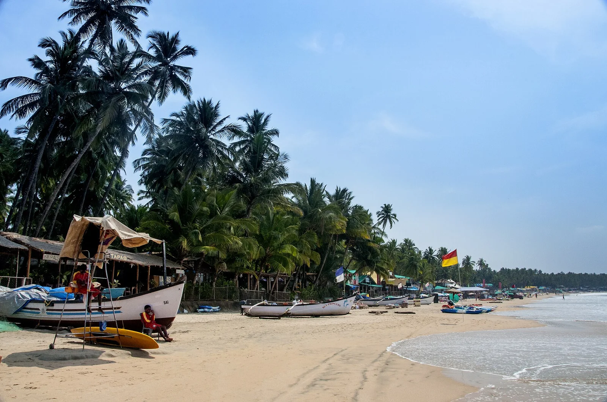

Palolem
Goa, Inde · baignade, kayak, paddle

Baie en arc de cercle bordée de cocotiers au sud de Goa. Hors mousson, l’eau est calme et se prête à la baignade et au kayak jusqu’aux rochers et à l’îlot du nord de la plage.
- Lieu
- Goa, Inde
- Niveau
- Débutant
- Activités
- baignade, kayak, paddle
- Type d'eau
- Mer / océan
- Coordonnées
- 15.01, 74.02 (position approximative du secteur)
Dangers à connaître
- Mer dangereuse en mousson.
- Bateaux de pêche et d’excursion près du rivage.
Le conseil d'Ocean Buddy
Viens entre novembre et mars ; pendant la mousson (juin à septembre), la mer est forte et la baignade souvent interdite.
Ouvrir dans Ocean Buddy Télécharger sur l'App Store
Source : Fiche Ocean Buddy · septembre 2026 · à vérifier localement.